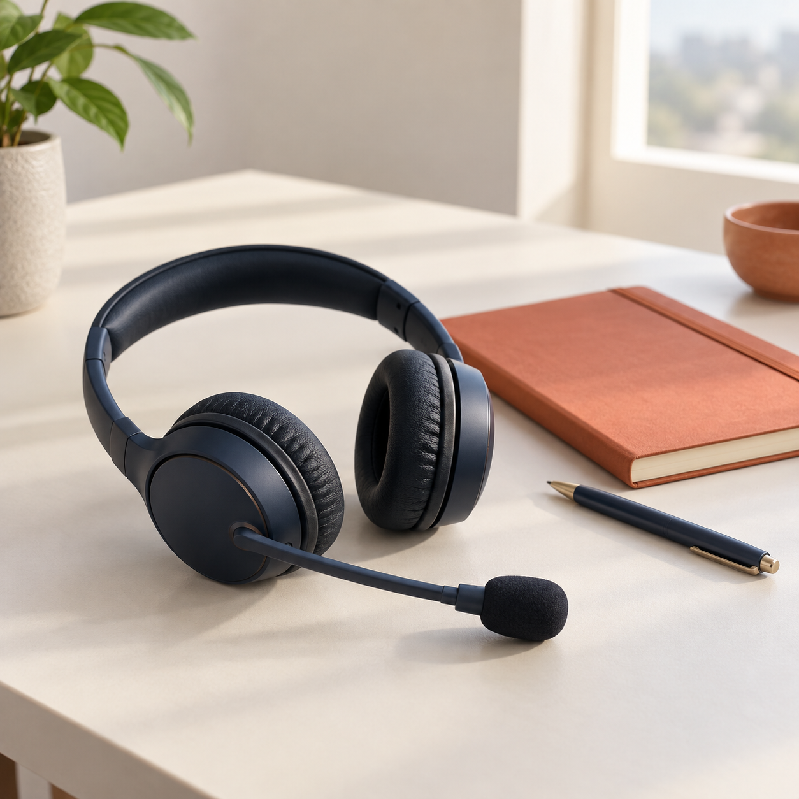

Beauty Fair 2026
KOTRA 참가기업 업무·통역 지원
KOREAN · PORTUGUESE INTERPRETER
한국과 브라질 사이에서 사람과 맥락을 잇는 프리랜서 통역사 김유진입니다.

KOR01 / SELECTED WORK
KOTRA 참가기업 업무·통역 지원
기업 프레젠테이션 및 비즈니스 미팅 통역
프레스센터 운영 지원
02 / ABOUT
청자의 이해를 먼저 생각하고, 현장의 맥락과 문화적 차이까지 세심하게 살핍니다. 비즈니스 미팅부터 전시회, 공연 제작, 공공행사까지 다양한 현장에서 유연하고 책임감 있게 소통을 지원해 왔습니다.
LET’S WORK TOGETHER